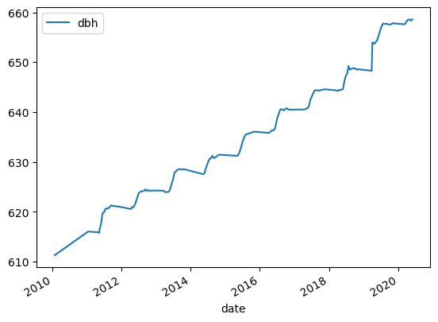
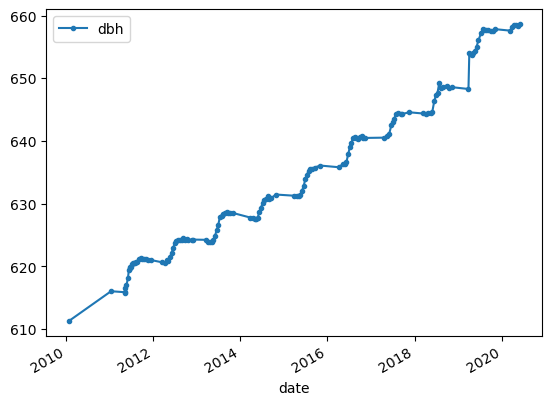
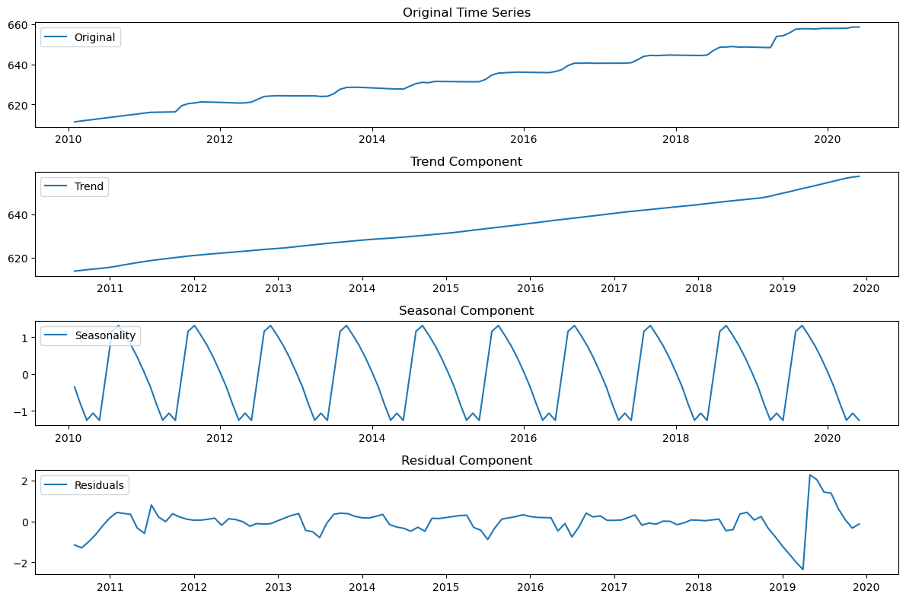
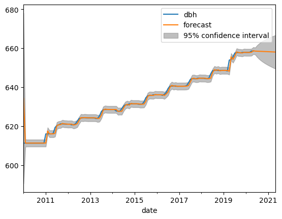
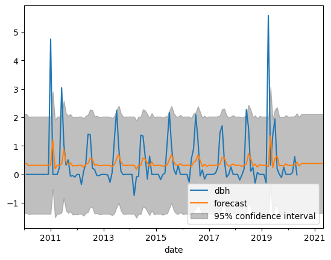

import pandas as pd
import matplotlib.pyplot as pltProblem Set 02

Instructions: 1. Name: 1. Create a new ChatGPT chat called “SDS390 PS02” that contains all the prompts you used for this problem set, click the share button, and paste the URL in Markdown format here
1. Load and explore data
- Load the CSV data of biweekly dendroband measures for tree with tag 82203
- Look at the raw data (rows and variables) and meta-data as Amir always told me to do
- Note that DBH is the only non-index variable we will work with, thus simplify the data frame to only have this variable
- Plot the time series of DBH (diameter at breast height, in mm) as we’ve done numerous times in DataCamp: just using
.plot()with no arguments - Now plot the time series where each of the 147 observed data point is marked with a dot. In other words, your plot should at the very least have these points.
- What is the difference in information presented between the two plots?
- Describe any patterns you observe in the time series where each observed data point is marked with a dot
tag_82203 = pd.read_csv('tag_82203.csv', parse_dates = ['date'], index_col = 'date')
tag_82203.head()| tag | stemtag | survey.ID | year | month | day | intraannual | sp | measure | codes | notes | status | stemID | dendDiam | dbh_orig | new.band | dendroID | dbh | scenario | data_source | |
|---|---|---|---|---|---|---|---|---|---|---|---|---|---|---|---|---|---|---|---|---|
| date | ||||||||||||||||||||
| 2010-01-27 | 82203 | 1 | 2010.01 | 2010 | 1 | 27 | 1 | litu | 26.20 | NaN | NaN | alive | 10045 | 610.0 | 611.3 | 1 | 106 | 611.300000 | 0 | biweekly_dbh |
| 2011-01-15 | 82203 | 1 | 2011.01 | 2011 | 1 | 15 | 1 | litu | 41.10 | NaN | NaN | alive | 10045 | NaN | 611.3 | 0 | 106 | 616.049980 | 1 | biweekly_dbh |
| 2011-05-09 | 82203 | 1 | 2011.02 | 2011 | 5 | 9 | 1 | litu | 40.62 | NaN | NaN | alive | 10045 | NaN | 611.3 | 0 | 106 | 615.896874 | 1 | biweekly_dbh |
| 2011-05-13 | 82203 | 1 | 2011.03 | 2011 | 5 | 13 | 1 | litu | 40.21 | NaN | NaN | alive | 10045 | NaN | 611.3 | 0 | 106 | 615.766085 | 1 | biweekly_dbh |
| 2011-05-16 | 82203 | 1 | 2011.04 | 2011 | 5 | 16 | 1 | litu | 42.55 | NaN | NaN | alive | 10045 | NaN | 611.3 | 0 | 106 | 616.512610 | 1 | biweekly_dbh |
tag_82203.info()<class 'pandas.core.frame.DataFrame'>
DatetimeIndex: 147 entries, 2010-01-27 to 2020-05-31
Data columns (total 20 columns):
# Column Non-Null Count Dtype
--- ------ -------------- -----
0 tag 147 non-null int64
1 stemtag 147 non-null int64
2 survey.ID 147 non-null float64
3 year 147 non-null int64
4 month 147 non-null int64
5 day 147 non-null int64
6 intraannual 147 non-null int64
7 sp 147 non-null object
8 measure 147 non-null float64
9 codes 1 non-null object
10 notes 4 non-null object
11 status 147 non-null object
12 stemID 147 non-null int64
13 dendDiam 6 non-null float64
14 dbh_orig 147 non-null float64
15 new.band 147 non-null int64
16 dendroID 147 non-null int64
17 dbh 147 non-null float64
18 scenario 147 non-null int64
19 data_source 147 non-null object
dtypes: float64(5), int64(10), object(5)
memory usage: 24.1+ KB# Recall to select a variable but return a data frame, not a series, you need to specify your variables as a list.
tag_82203 = tag_82203[['dbh']]tag_82203.plot()
plt.show()
tag_82203.plot(marker='o', markersize=3)
plt.show()
The original plot connects each consecutive point, so we have a hard time seeing at what interval the data is collected. The plot with the observed points marked with dots shows:
- There was one value in 2010 and then a jump
- Values are not collected in winter
2. Decomposition Plots
Create a seasonal decomposition plot of this data to answer the following questions: 1. What is the approximate growth (in mm) per year trend for this tree 1. What is the approximate range in seasonal variation in growth around this trend? 1. When are the peaks and when are the valleys in this seasonal variation? 1. Are there periods of time where we might be skeptical of the above trend and seasonality?
Note: You may need to do some data transformation as seen in the first DataCamp course to get a valid plot
# Downsample data from daily to monthly by taking average
tag_82203_monthly = tag_82203.resample('m').mean()
# Interpolate all missing values
tag_82203_monthly.interpolate(inplace=True)import pandas as pd
import matplotlib.pyplot as plt
from statsmodels.tsa.seasonal import seasonal_decompose
decomposition = seasonal_decompose(tag_82203_monthly, model='additive')plt.figure(figsize=(12, 8))
plt.subplot(411)
plt.plot(tag_82203_monthly, label='Original')
plt.legend(loc='upper left')
plt.title('Original Time Series')
plt.subplot(412)
plt.plot(decomposition.trend, label='Trend')
plt.legend(loc='upper left')
plt.title('Trend Component')
plt.subplot(413)
plt.plot(decomposition.seasonal, label='Seasonality')
plt.legend(loc='upper left')
plt.title('Seasonal Component')
plt.subplot(414)
plt.plot(decomposition.resid, label='Residuals')
plt.legend(loc='upper left')
plt.title('Residual Component')
plt.tight_layout()
plt.show()
- In the 9 years from 2011 to 2020, the tree grew from 620m to 650mm = (650-620)/9 = 3.33mm per year about
- Plus or minus 1 mm, so close to 1/3rd of annual growth!
- Peaks are in summer, valleys in late winter
- Looking are the residuals, I’d be suspicious of early values at 2011 and late values in 2019 and 2020
3. Forecasting using an AR(2) model
In this exercise you will use an AR(2) model as seen in the second datacamp course “Time Series Analysis in Python” to forecast this tree’s size exactly two years into the future. Unfortunately since we aren’t covering ARIMA models until later in the course, we won’t be able to:
- Ascertain the appropriateness of using an AR(2) model. Ex: are all assumptions met?
- Fully interpret the model output’s meaning
- Diagnose any issues.
However, we will simply view this code as a minimally viable product that we will improve on later. Instructions: 1. Fit an appropriate AR(2) model 1. Print the summary of the result 1. Plot the TS data along with both in-sample fitted forecasts AND out-of-sample forecasts exactly two years into the future 1. Comment on the quality of the out-of-sample forecast. If you have any ideas on how to improve the forecast state them, if not no problem.
# Earliste date recorded is 2010-01-31
tag2.head()| dbh | |
|---|---|
| date | |
| 2010-01-31 | 611.3 |
| 2010-02-28 | 611.3 |
| 2010-03-31 | 611.3 |
| 2010-04-30 | 611.3 |
| 2010-05-31 | 611.3 |
# Last date recorded is 2020-05-31, so we will forecast upto 2022-05-31
tag2.tail()| dbh | |
|---|---|
| date | |
| 2020-01-31 | 657.856802 |
| 2020-02-29 | 657.856802 |
| 2020-03-31 | 657.920522 |
| 2020-04-30 | 658.548156 |
| 2020-05-31 | 658.533295 |
# Code from DataCamp "Time Series Analysis in Python" course, Chapter 3, Video 2, Exercise 2
from statsmodels.tsa.arima.model import ARIMA
from statsmodels.graphics.tsaplots import plot_predict
mod = ARIMA(tag2, order=(2,0,0))
result = mod.fit()
result.summary()| Dep. Variable: | dbh | No. Observations: | 125 |
| Model: | ARIMA(2, 0, 0) | Log Likelihood | -169.785 |
| Date: | Wed, 11 Oct 2023 | AIC | 347.570 |
| Time: | 11:20:47 | BIC | 358.883 |
| Sample: | 01-31-2010 | HQIC | 352.166 |
| - 05-31-2020 | |||
| Covariance Type: | opg |
| coef | std err | z | P>|z| | [0.025 | 0.975] | |
| const | 634.2981 | 21.607 | 29.356 | 0.000 | 591.949 | 676.647 |
| ar.L1 | 1.3073 | 0.071 | 18.423 | 0.000 | 1.168 | 1.446 |
| ar.L2 | -0.3085 | 0.071 | -4.365 | 0.000 | -0.447 | -0.170 |
| sigma2 | 0.8410 | 0.036 | 23.067 | 0.000 | 0.770 | 0.912 |
| Ljung-Box (L1) (Q): | 1.51 | Jarque-Bera (JB): | 1459.08 |
| Prob(Q): | 0.22 | Prob(JB): | 0.00 |
| Heteroskedasticity (H): | 1.27 | Skew: | 3.31 |
| Prob(H) (two-sided): | 0.45 | Kurtosis: | 18.38 |
Warnings:
[1] Covariance matrix calculated using the outer product of gradients (complex-step).
# Plot
fig, ax = plt.subplots()
tag2.plot(ax=ax)
plot_predict(result, start='2010-01-31', end='2021-05-31', ax=ax)
plt.show()
We observe that for in-sample values from 2011 and onwards up until the last observation on 2020-05-31, the AR(2) model fits the data reasonably well. However the out-of-sample forecasts into the future make little sense.
Making taking differences will return better results? i.e. growth per month?
mod = ARIMA(tag2.diff(), order=(2,0,0))
result = mod.fit()
fig, ax = plt.subplots()
tag2.diff().plot(ax=ax)
plot_predict(result, start='2010-01-31', end='2021-05-31', ax=ax)
plt.show()
The forecast of growth seems a little more reasonable, especially when forecasting out-of-sample. We could then undo the difference to get DBH size values. However, we are trusting the appropriateness of AR(2) on blind faith; hopefually we can revisit later in the semester.